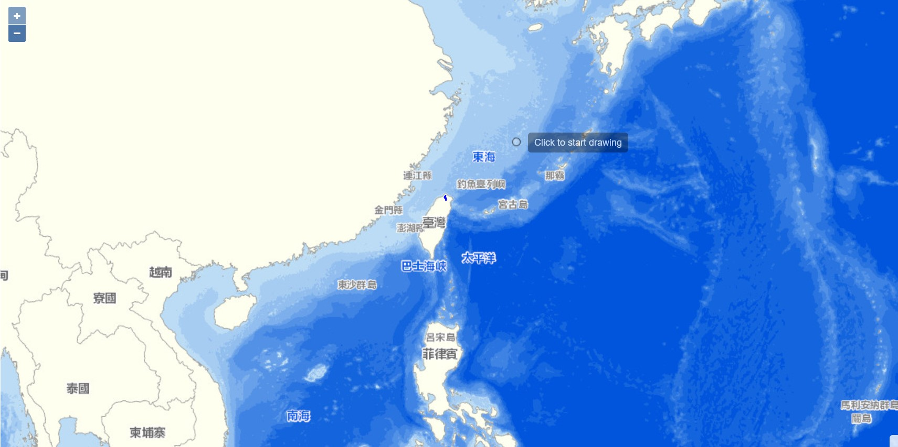

tonch.github.io
Welcome to my website and github
!
I
 I am a student study in Computer Science and Engineering at
I am a student study in Computer Science and Engineering at
National Taiwan Ocean University
, Taiwan in 2019 . My Indep
endent study is Advanced Hydrology and Subsidence Monitor.
Finally I work as an intern at Academia Sinica, in 2023 .
Elucidator

My Partner

study
skill

tool

NTOU Senior project - Advanced Hydrology and Subsidence Monitor
Academia Sinica Intern Topic - Taipei City Route Planning Algorithm System

I am a student study in Computer Science and Engineering at National Taiwan Ocean University , Taiwan in 2019 . My Indep
endent study is Advanced Hydrology and Subsidence Monitor.
Finally I work as an intern at Academia Sinica, in 2023 .